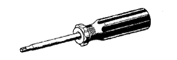

Sliding door preparation [Removal]
|  | 09041-00020 | Torx driver (T25) |
 | 09041-00030 | Torx driver (T30) |
 | 09042-00010 | Torxo Socket Lenge (T30) |
 | 09070-20010 | Roof Molding Remover |
| Torque wrench [3- 23n · m {30- 230kgf · cm}] |
| Toyota genuine body grease | ||
| Protective tape |